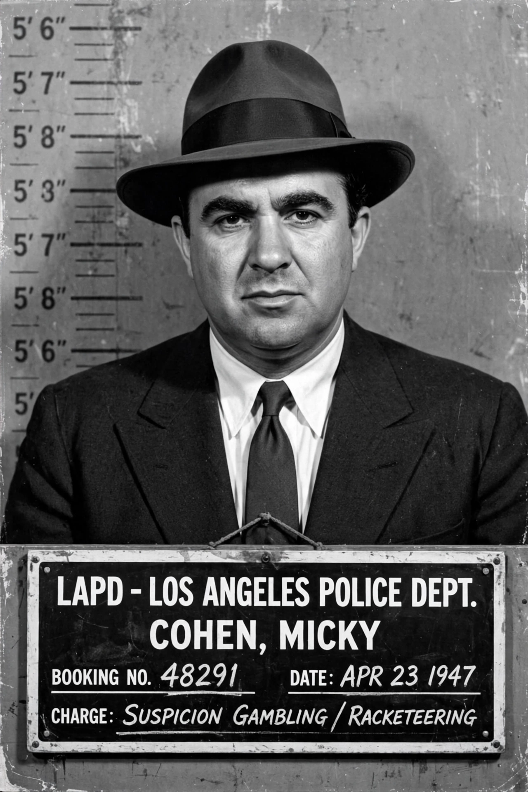

Meyer Harris "Mickey" Cohen (September 4, 1913 – July 29, 1976) was an American gangster who dominated organised crime in Los Angeles from the 1940s through the 1960s. A former boxer and associate of Bugsy Siegel, Cohen controlled bookmaking, narcotics and extortion rackets on the West Coast and became a flamboyant media celebrity despite repeated convictions for tax evasion.

| Born | 4 September 1913, New York City / raised in Los Angeles |
|---|---|
| Died | 29 July 1976 (aged 62), Los Angeles, California |
| Occupation | Gangster, boxer |
| Convictions | Tax evasion (1951, 1961) |
Born to Jewish immigrant parents and raised in Boyle Heights, Los Angeles, Cohen ran errands for bootleggers as a boy, boxed professionally as a teenager in Cleveland and New York, and worked for mob figures including Owney Madden and, in Chicago, associates of Al Capone.
Sent to Los Angeles in 1937, Cohen became bodyguard and lieutenant to Bugsy Siegel. After Siegel's murder in 1947, Cohen seized his rackets, surviving numerous assassination attempts amid a gang war with Jack Dragna's Los Angeles crime family. His Sunset Strip headquarters, tailored suits, and courtship of gossip columnists made him a fixture of postwar LA notoriety, investigated by the Kefauver Committee.
Convicted of federal tax evasion in 1951 (four years) and again in 1961, Cohen served time at Alcatraz and Atlanta, where a fellow inmate's attack left him partially disabled. Released in 1972, he lived quietly, gave interviews denying involvement in unsolved murders, and died of stomach cancer in 1976. He was portrayed in the films Bugsy, L.A. Confidential and Gangster Squad.